OVERVIEW
OVERVIEWFoundry 2D is an open-source 2D platformer prototyping tool designed to make building, testing, and iterating on platforming levels accessible and intuitive. Built around a customizable set of gameplay systems, the tool allows designers to construct levels, experiment with different mechanics, and quickly test their ideas without needing to build the underlying systems themselves.
THE EXPERIENCE
The project's central philosophy was to prioritize clarity over complexity, readability
over aesthetics, and reliability over features. Rather than building the largest possible
tool, we wanted to create something stable, modular, and intuitive that would make rapid
prototyping the primary focus.
Users can create levels using a collection of interactive tiles, enemies,
objects, and environmental elements, while customizing everything from player
movement and enemy behavior to camera settings, textures, animations, and sounds.
By bringing these systems together into a streamlined editor, Foundry 2D aims
to make the process of prototyping platformer experiences faster, more
approachable, and more flexible.
MY ROLE & CONTRIBUTIONS
As Lead Designer at Levelsmith Labs, I was responsible for directing
a team of four designers through the design and development of Foundry
2D. Starting with an abstract project brief, I helped establish the design
direction, define the tool's core systems, and translate its initial
requirements into a cohesive experience. My responsibilities extended
across UI/UX design, gameplay systems, prototyping, animation, and
implementation.
Alongside my leadership responsibilities, I contributed hands-on throughout development.
I designed and prototyped core systems, established the editor's visual language and
interface layouts, created the project's in-game artwork and animations, and contributed
engineering work. Some of my programming contributions included developing the initial
Main Menu Manager and redesigning the Player class around a new finite state machine.
Key Contributions:
CRITIQUE-DRIVEN PROCESS From the beginning I put together a design process that was team driven, efficient,
and fostered further ideation. For every new system or feature, each designer built their
own Figma prototype independently. We then reviewed everyone’s work together. Instead of
picking one person’s solution, we combined ideas, built on each other’s prototypes, and
iterated toward a stronger final design. This kept critique respectful and kept everyone
contributing.
This process allowed us to maintain a consistent direction while giving everyone room to
contribute. I wanted to establish an environment where designers could comfortably experiment,
disagree, and challenge ideas without feeling discouraged. By keeping communication open and
iteration frequent, we were able to move quickly and not grow attached to our designs while maintaining a strong level of
collaboration between the design and technical teams.
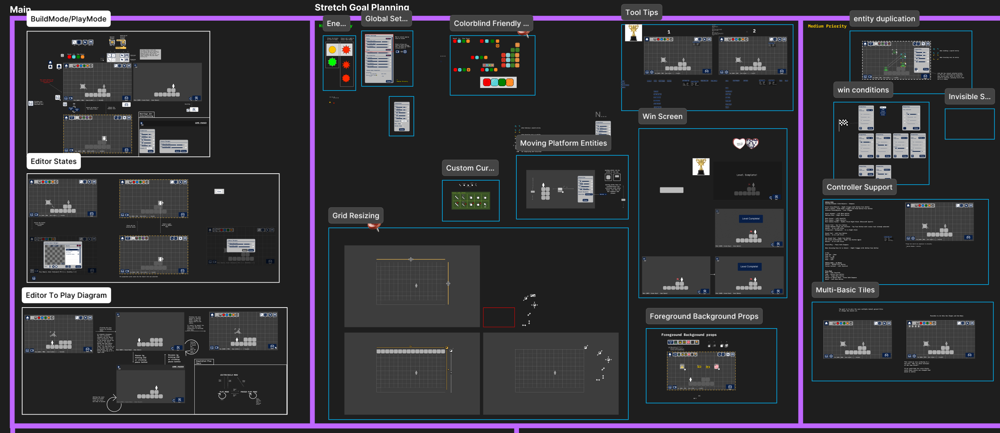
Design Figma board - Overall state of F2D's design around middle of production
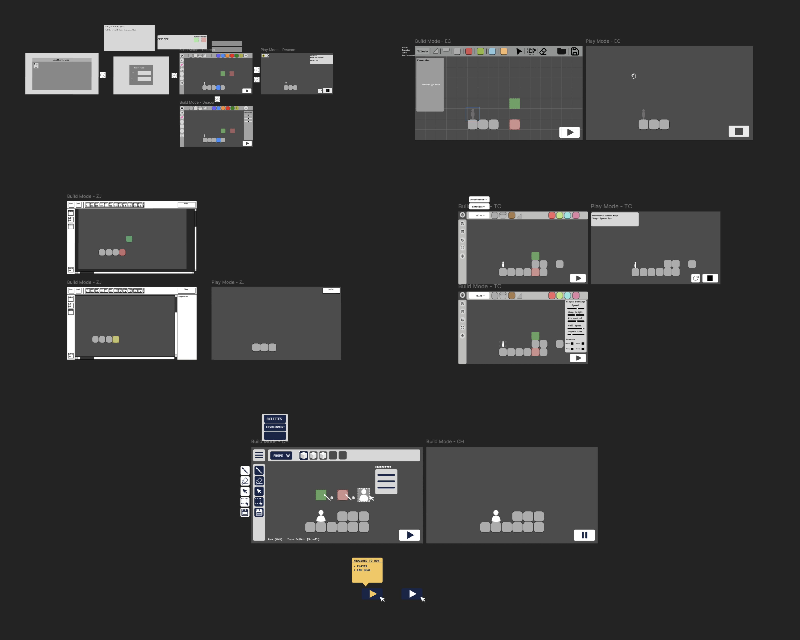
Critique driven design process - each designer's initial editor designs, my personal contribution being the bottom most design.
FROM CONCEPT TO BUILD
The project began with a high-level production document outlining the core systems and responsibilities required for the tool. While the brief established the overall direction, many of the individual systems were intentionally left open to interpretation. Requirements such as grid placement, tile interactions, movement customization, and asset management described what the tool needed to accomplish without fully defining how users would interact with them.
My responsibility was to help bridge that gap. I worked to translate these broad requirements into concrete systems, interactions, and visual standards that could be implemented consistently across the project. This meant looking beyond individual features and considering how each system would fit into the larger user experience.
The original production document established a set of priorities that became the foundation of our design decisions: clarity over complexity, readability over aesthetics, reliability over features, and iteration speed over feature count. I used these principles to evaluate proposed features and guide our development priorities, ensuring that the tool remained focused on its primary purpose rather than becoming unnecessarily complicated.
FROM CONCEPT TO BUILD
While leading design, I also contributed directly to implementation. I developed the initial Main Menu Manager and reworked the Player class into a more comprehensive finite state machine, expanding the player's organization into 11 states.
I also worked on UI/UX, gameplay prototyping, animation, and visual assets. I created animations for the player, all four enemy types, checkpoints, props, coins, and tiles.
Maintaining hands-on involvement in development helped me evaluate design decisions from both the user's and engineer's perspectives. It also gave me a better understanding of implementation constraints, making it easier to communicate requirements, identify tradeoffs, and keep features aligned with the larger system.
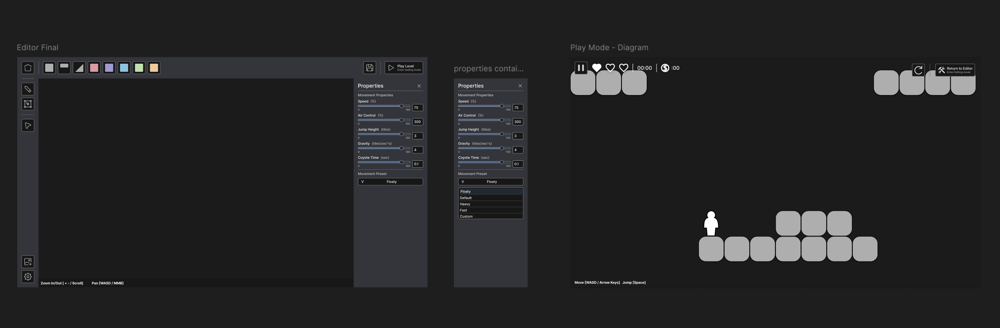
Final level editor visual overhaul
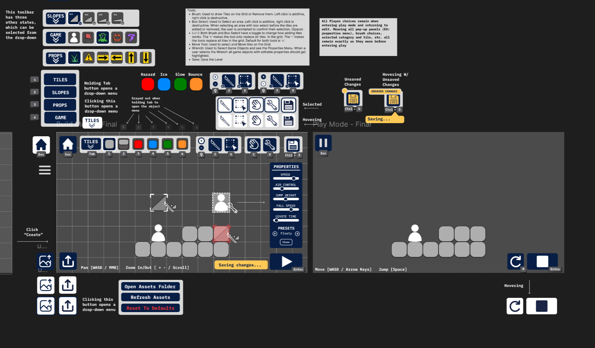
Version 1 level editor designs
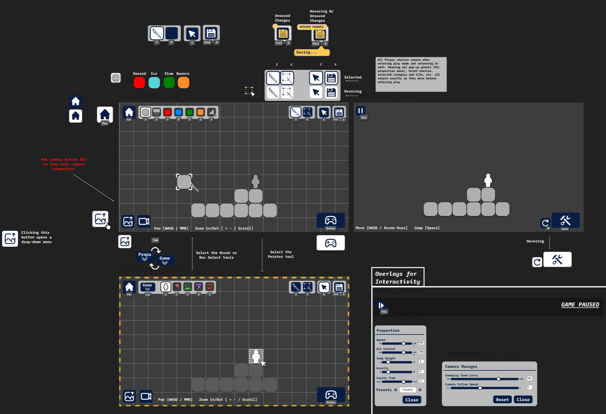
Version 2 level editor designs
Player Idle
Player Run
Player Jump / Fall
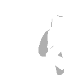
Player Wallslide
Player Damage
Player Death
Player Victory
Coin
Checkpoint
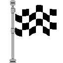
Goal
Enemy Idle
Enemy Run
Enemy Shoot
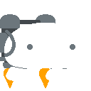
Enemy Flying
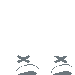
Enemy Death
Explosion
Feature-Rich 2D Level Prototyping Tool
Through the combination of iterative design, clear specifications, and close engineering collaboration, we completed the full design specification early and achieved over 80% of our stretch goals.
At one point, we were an entire sprint ahead of schedule. This gave us the flexibility to introduce additional features without compromising our core requirements, original vision, or stability.
Our progress was not simply the result of working faster. By identifying issues early, refining designs before implementation, and supporting swift integration, we reduced uncertainty and made our development process more predictable.
Reflection
Foundry 2D taught me that effective design leadership extends beyond creative direction. It requires building processes that allow people to work together, make decisions confidently, and turn ideas into stable, usable systems.
I entered the project with limited leadership experience, and learned how to coordinate a team, communicate with stakeholders, navigate ambiguity, and balance creative exploration with production constraints. One of my biggest takeaways was the value of establishing a shared source of truth and creating consistent opportunities for feedback and alignment.
The experience reinforced my interest in systems-driven design and gameplay engineering, particularly the challenge of creating tools and mechanics that make experimentation faster, more intuitive, and more expressive.
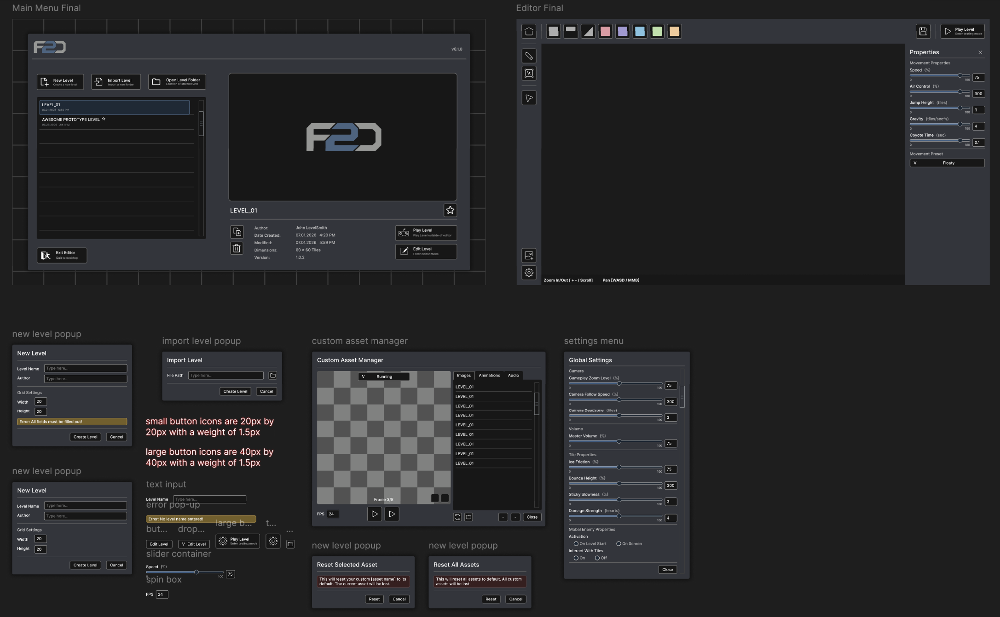
Final design for major ui elements
Asset manager running in build